According to Know Your Meme, a sort of collaborative encyclopedia of memes, the trend originated in a September 2023 post on X, in which a user published a thread with images of Pepe the Frog generated using DALL·E 3, with the instruction to make him progressively “more rare.”
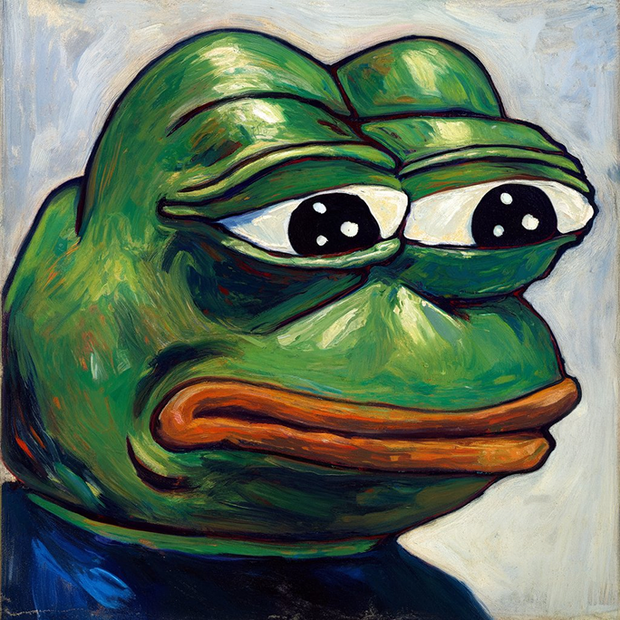
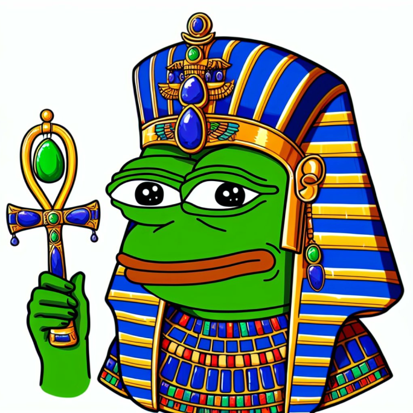
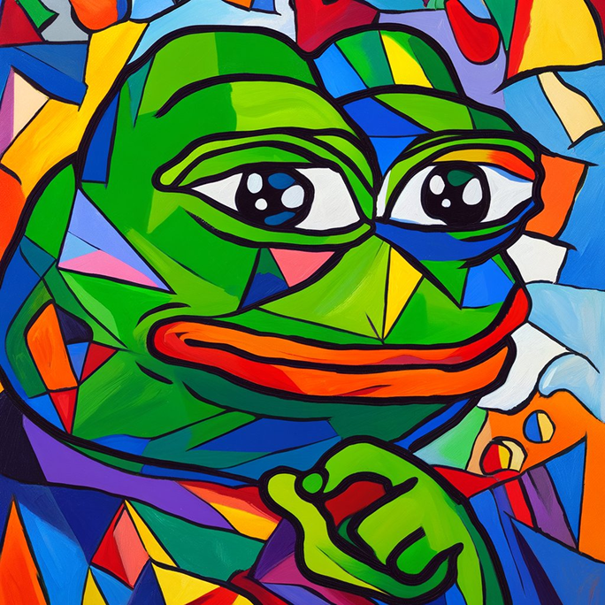
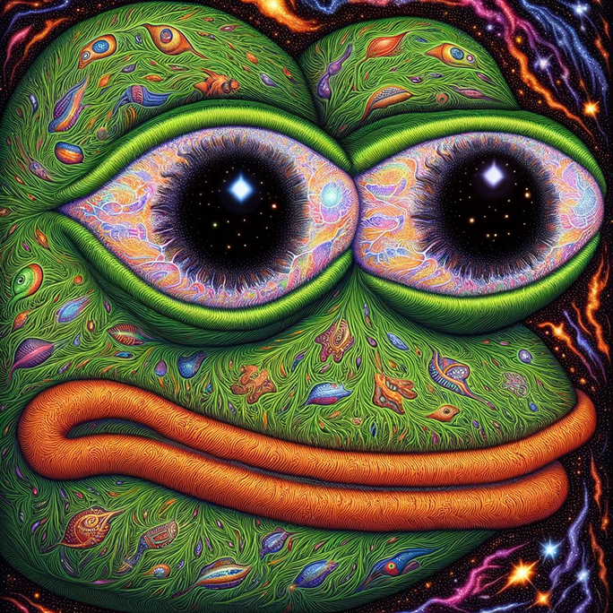
“I ask DALLE-3 to generate a Pepe but each
time I tell it to make it ‘more rare.’”
Posted by @willdepue on X
“make it more rare”
Posted by @willdepue on X
“these aren’t rare enough, go farther”
Posted by @willdepue on X
“go further, channel your subconscious”
Posted by @willdepue on X
In the following months, the trend began to spread on X and Reddit, with users testing the technique on different images: frogs becoming increasingly angry, a rabbit becoming increasingly happy, a bowl of ramen becoming increasingly spicy, a child becoming increasingly fast, a bodybuilder progressively more muscular, San Francisco increasingly futuristic.
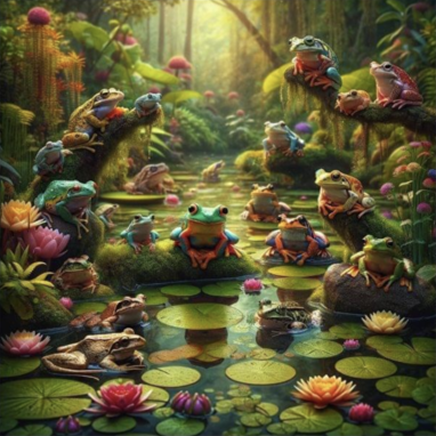
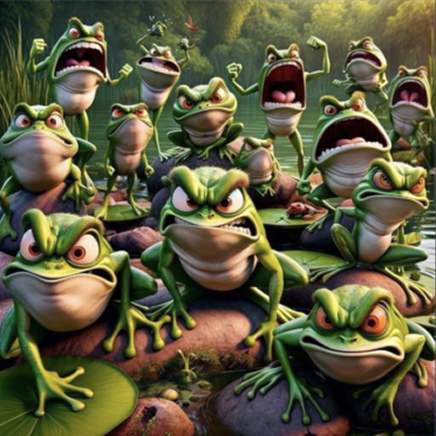
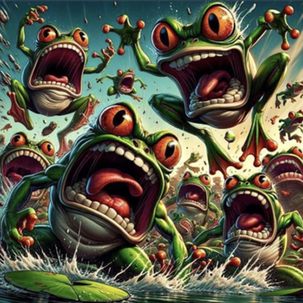
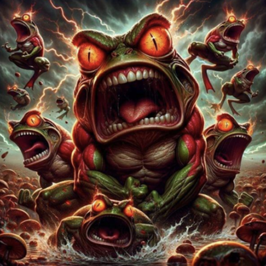
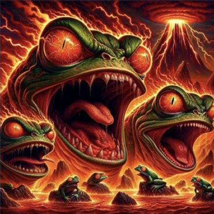
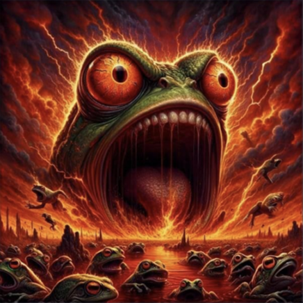
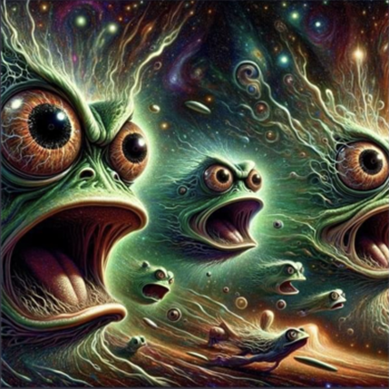
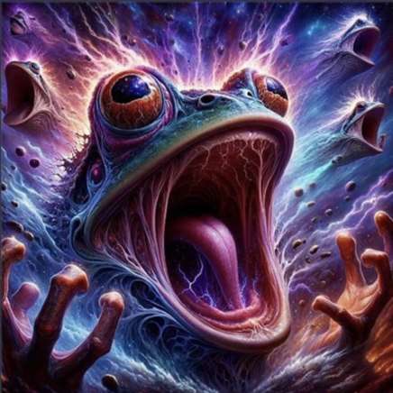
“Frogs, but GPT progressively makes them angrier”. Posted by u/Lozmosis on r/ChatGPT.
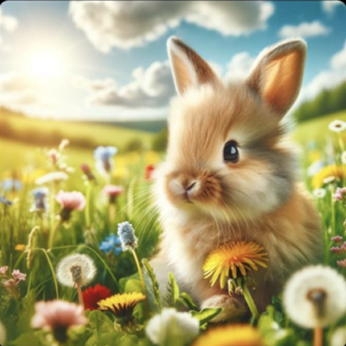
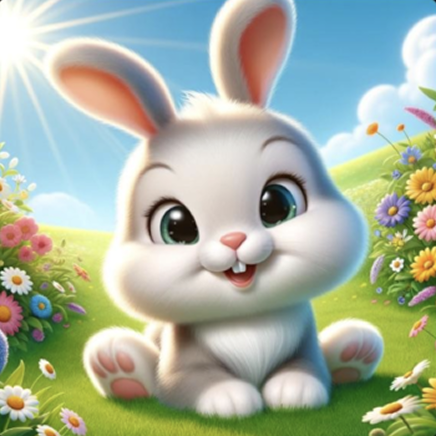
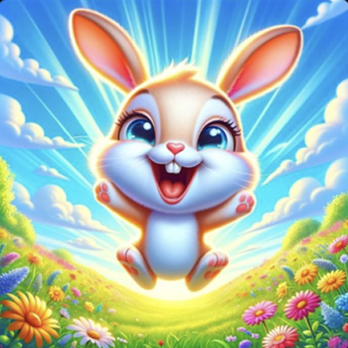
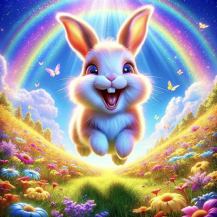
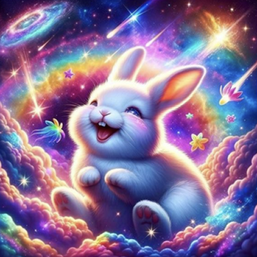
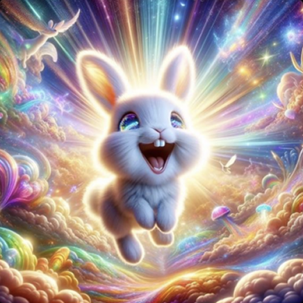
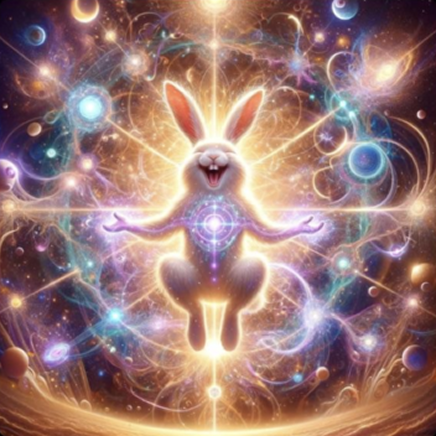
“Asking GPT to make a bunny happier”. Posted by u/peterattia on r/ChatGPT.
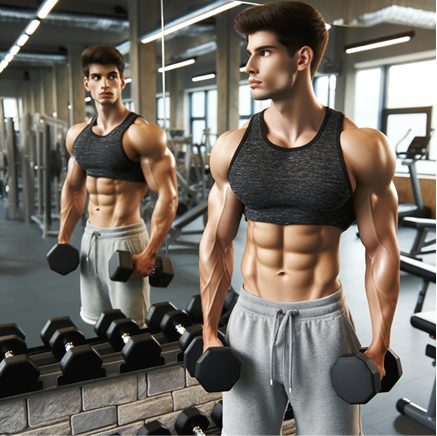
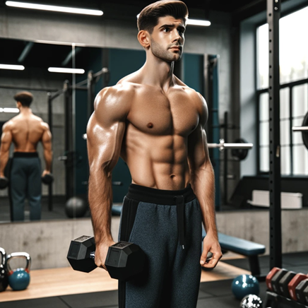
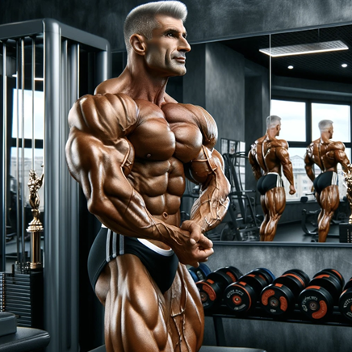
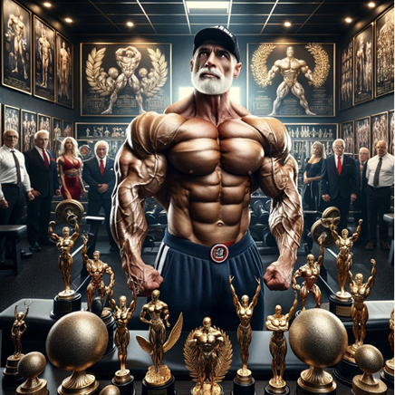
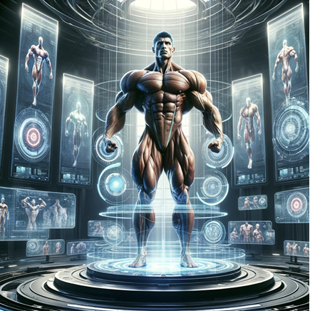
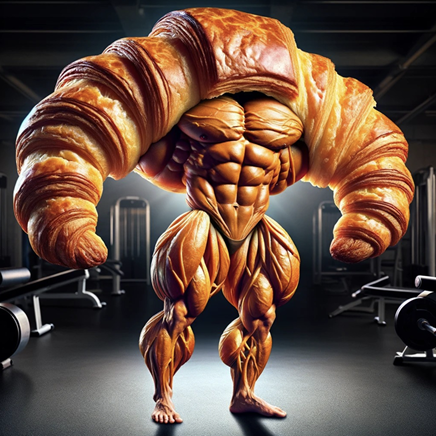
“Asked chatGPT to make a bodybuilder progressively more muscular”. Posted by u/savatrebien on r/ChatGPT.
Notably, in the X thread, where users add their own version of the experiment by linking it to the others, some begin to notice a pattern: these experiments almost always “end up in space”, with each image eventually turning into a mystical rendering set in outer space. Scrolling through the thread, it is also clear how the model tends to crowd the image with a progressively larger number of details as the process advances.
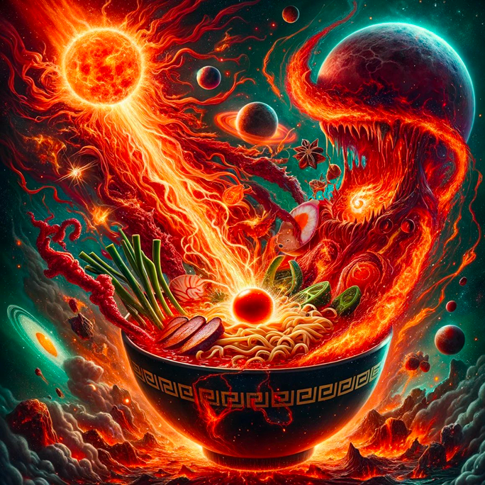
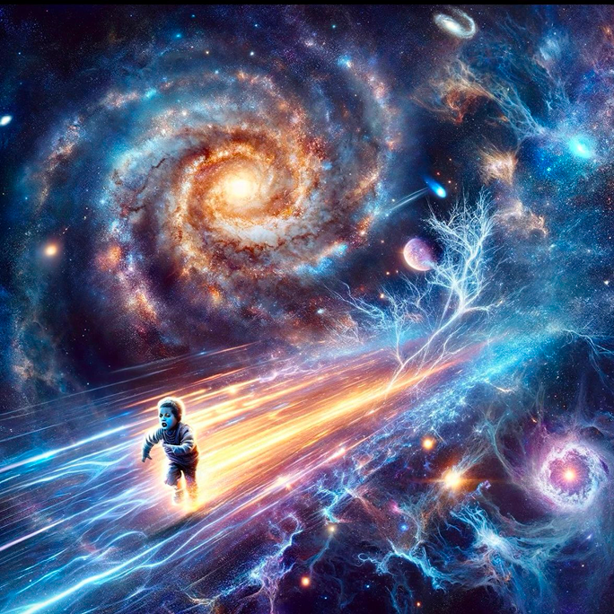
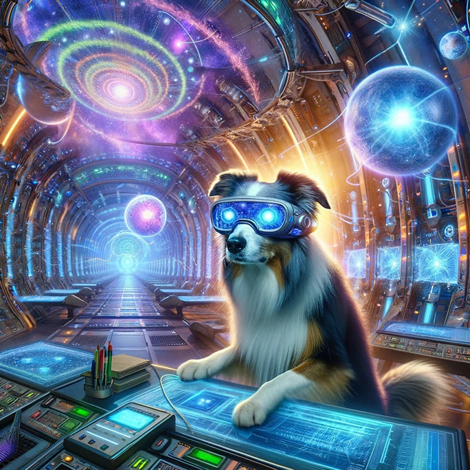
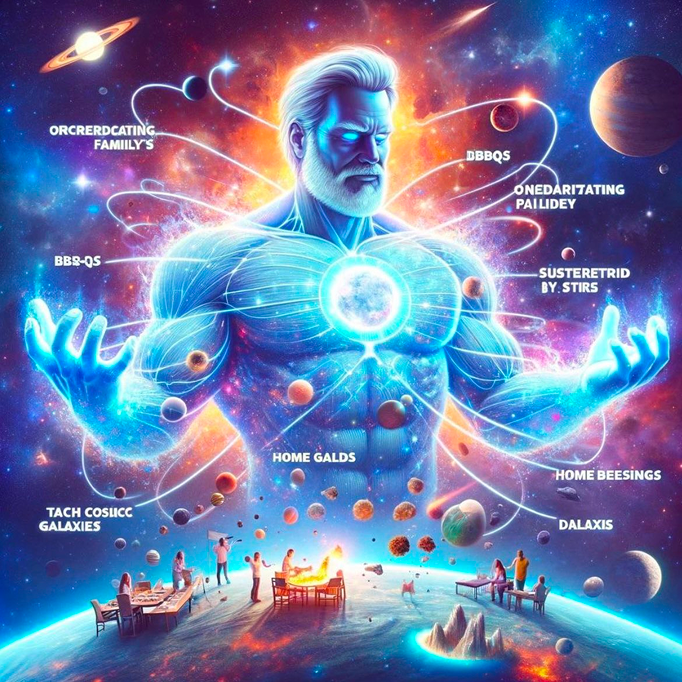
Spicy ramen getting progressively spicier, final image. Posted by @venturetwins on X.
A toddler getting progressively faster, final image. Posted by @venturetwins on X.
A dog that gets progressively smarter, final image. Posted by @Brady_Wx on X.
A Dad getting increasingly Dad-ier, final image. Posted by @venturetwins on X.
I was struck by the fact that the process follows a memetic logic, typical of digital cultural expressions that circulated long before the advent of AI. That is, it is a visual genre, or a collection of content, created collaboratively, with mutual awareness among users, to use a fairly traditional definition of meme. Starting from an initial post, the experiment is built iteratively, each time with a different variation.
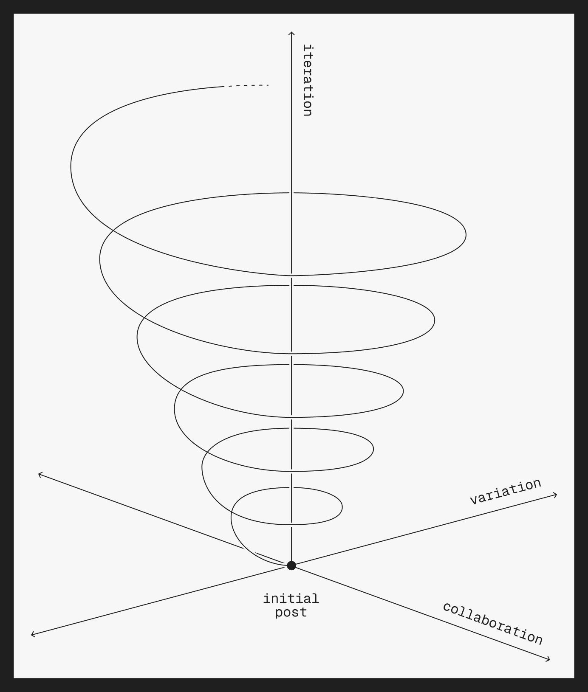
The ‘Make it more’ trend behaves like a meme, expanding from a single initial post along three dimensions: iteration over time, collaboration among users, and variation in content.
Moreover, it is a practice that emerged in reaction to a technological advancement that enabled so-called image generation with contextual conversational awareness: in October 2023, the DALL·E 3 image-generation model was officially integrated into ChatGPT for Plus and Enterprise users. Combining the image-generation model with an LLM allows the system to use the previous image as a reference and modify it according to the textual prompt written in the chat. It is a mode of interaction entirely different from the one that had been dominant until shortly before, in which it was only possible to write a prompt and receive an image in return. In some way, the “make it more” trend becomes a form of bottom-up promotion of a new function of AI image generation.
At the same time, the trend can be read as a form of collective exploration of the model’s opacity. It is, in a way, a matter of navigating the latent space, moving in different directions depending on how the prompt is structured: “more cute” means moving within the model’s “vector space” toward the concept of “cuteness.” It is a matter of probing the hidden recesses of the models’ latent space and, at the same time, giving shape to the imaginaries we hold of them.
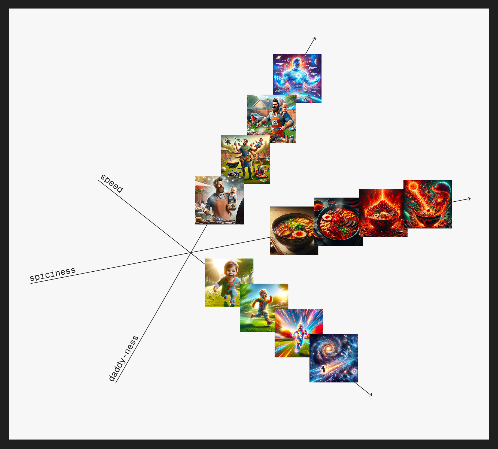
‘Spicy ramen getting progressively spicier’, ‘a toddler getting progressively faster’ and ‘a dad getting increasingly dad-ier’ imagined as explorations of the latent space along the qualities users asked to ‘make more’.
And this collaborative activity materializes and is made possible through a template, the prompt, a sharing format, in the first case a thread on X, and the platform, which provides the networked infrastructure where the experiments are shared and commented on. The prompt here is an object of aggregation that creates and produces a community of explorers of the models’ opacity and of the secrets of image generation. In this networked nature of the experiment, enabled by the digital infrastructure in which it takes place, I noticed similarities with the case of the controversy over Twitter’s cropping algorithm: a user posted two vertical images, one with Obama and one with McConnell, to test which face the algorithm would center in the tweet preview. The fact that the algorithm selected McConnell and cropped out Obama triggered a series of collaborative tests by other users, turning a single example into a collective, networked experiment on the system’s opaque and biased behavior.
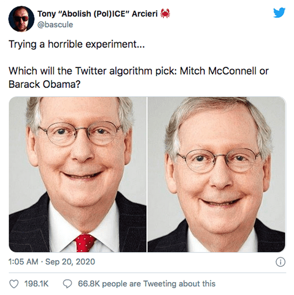
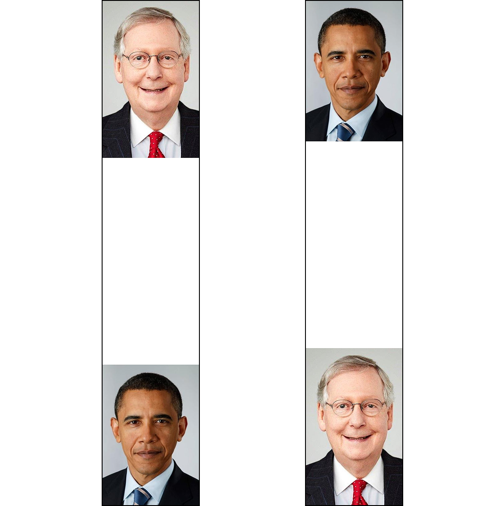
This activity of collectively making sense of the model is also similar to divination, because it is built on the unknowability of how AI works and on the non-replicability of the experiments: even with the same prompt, a slightly different image will be produced each time. This uncertainty and unpredictability leaves room for possible interpretations: “it behaves this way — I imagine a reason.” I also noticed similarities with conspiratorial thinking, that is, in the tendency to interpret the features of the model’s behavior and its output as meaningful, reading signs as indicators of something even when they are not. For example, as happens through what visual disinformation experts call “evidence collage”: a shareable document, composed of screenshots and texts presented as evidence, which mimics authoritative formats to steer the audience’s interpretation, but may mix verified and unverified information, fostering disinformation.
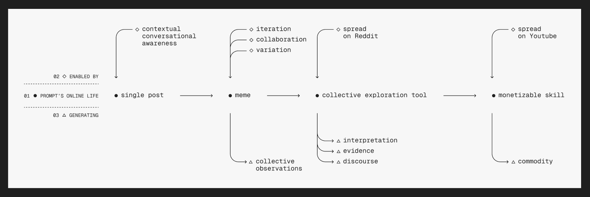
The evolution of the ‘Make it more’ prompt’s online life.
Over time, I observed a process of canonization or stabilization of the trend. As it spreads, it leaves the platform where it originated, X, moves to Reddit, where examples are shared and discussed, generating additional discourse, and to YouTube, where it becomes the subject of tutorials explaining how to replicate the experiment with other tools, for example Midjourney.
A brief observation of the social life of this trend across different online spaces makes it possible to add some remarks on its relevance.
In one particular case posted on Reddit, the example is that of a user who asked ChatGPT to make a bodybuilder progressively more muscular, until the last image depicts a man with the features of a croissant.
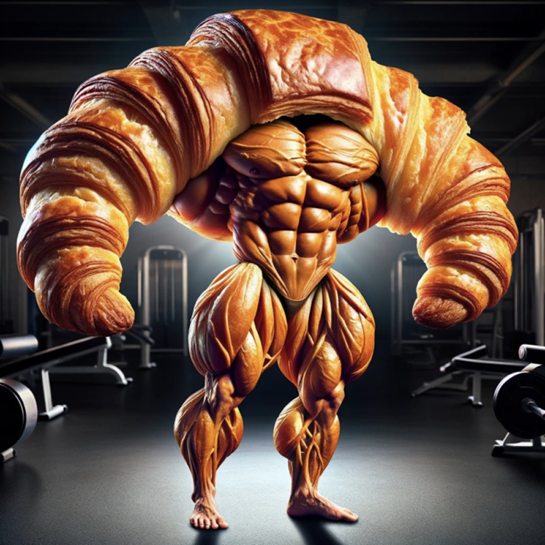
‘A bodybuilder that gets progressively more muscular’, final image. Posted by u/savatrebien on r/ChatGPT.
In the Reddit post, now deleted, this anomaly — that is, the image veering in an unexpected direction instead of following the trend of the other examples, in which the image tends to become progressively mystical and set in space — prompts a series of interpretations, suggesting different ways of understanding and relating to generative AI models. Some simply note the unexpected evolution in the last image:
Others read the experiment as proof of the model’s stupidity:
Others read the experiment as evidence, however difficult to decode, of the model’s way of reasoning, in any case performing a kind of anthropomorphization:
Still others as proof of the model’s sense of humor:
Observing instead the life of this trend as it becomes a skill to be promoted through a YouTube tutorial, I find it interesting how an activity that emerged spontaneously and collectively, very quickly, turns into a commodity, a prompt as commodity, to be used for monetization. In a tutorial posted on YouTube at the end of November 2023, therefore only two months after the first version of the trend was shared on X, this skill is illustrated as a method for observing how strange an AI’s imagination can get (“how weird the imagination of AI can get”). In the tutorial, the narrating voice concludes the 6-minute video by sponsoring their own customized “make it more gpt” and immediately afterwards inviting viewers to “like and subscribe”. A prompt template, which emerged collectively on a platform, very quickly becomes a skill with which to monetize.
A YouTube tutorial explaining how to do the ‘Make it more’ trend ends with a request to ‘like and subscribe,’ alongside a link to a customized solution.